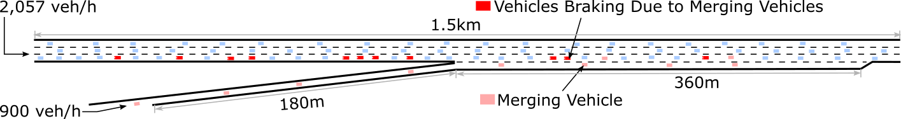
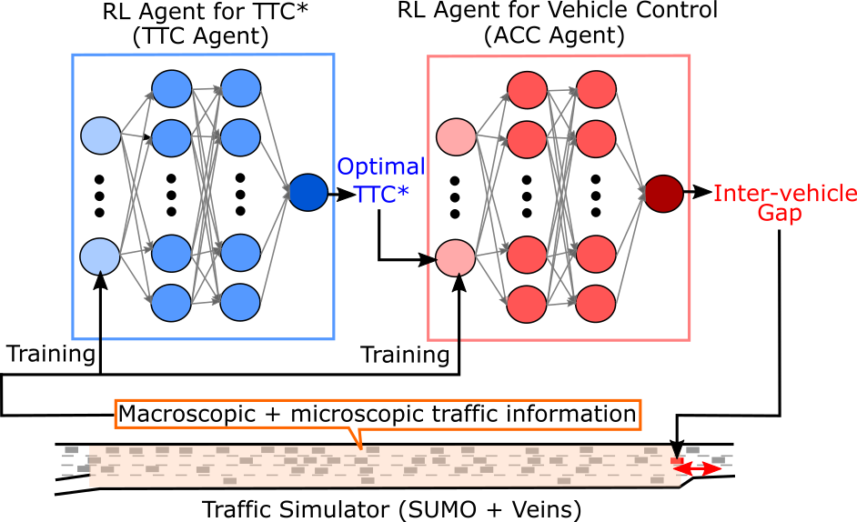
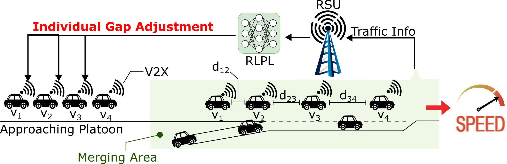
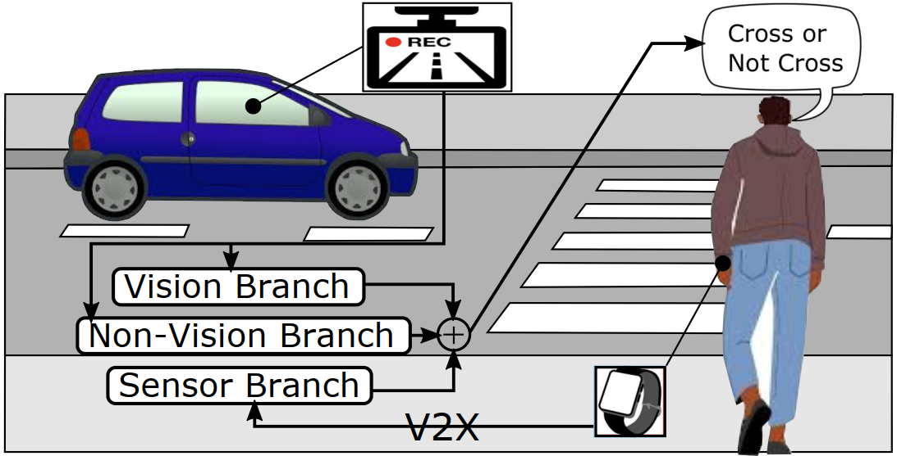
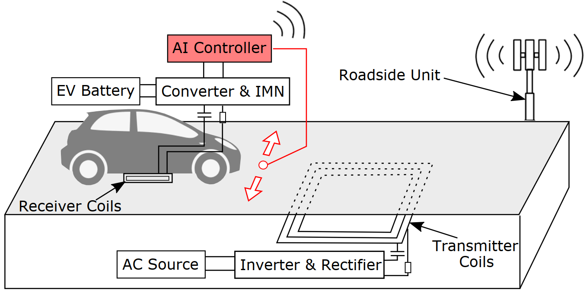
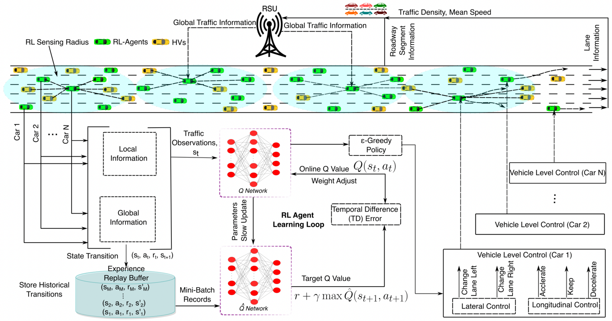
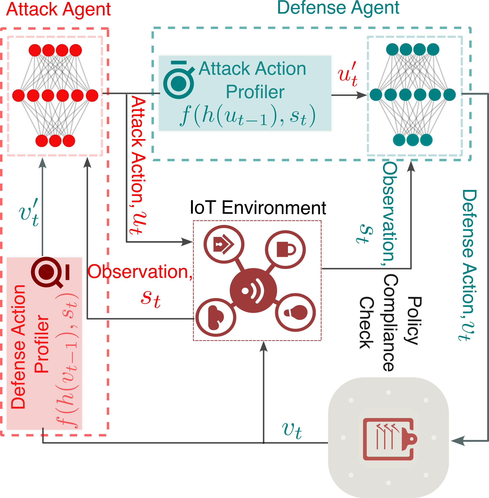

Research
My current research focuses on a machine learning-driven approach for a next-generation intelligent traffic control system for autonomous vehicles (AVs), aiming to reduce traffic congestion and enhance driving safety. The next-generation traffic control system consists of i) an intelligent adaptive cruise control system (ACC) and ii) a V2X-based cooperative intelligent lane-change system. The intelligent ACC system facilitates the AVs in adaptively adjusting the inter-vehicle gap to optimize traffic efficiency and driving safety under complex, dynamically changing, and diverse traffic conditions with a high degree of uncertainties caused by human-driven vehicles (HVs). The cooperative lane-change system, combined with the intelligent ACC system, will enable AVs to make an optimal lane-change decision based on microscopic and macroscopic traffic information received via V2X, thereby maximizing traffic flow, driving safety, and passenger comfort. I have been using deep reinforcement learning algorithms (e.g., DQN, DDPG, PPO, etc.) to generate fine-grained motion control for AVs in lateral and longitudinal directions in response to dynamically changing traffic conditions on various road types, including highways with ramps.
Research Project
D-ACC: Dynamic Adaptive Cruise Control System for Highways with Ramps Based on Deep Q-Learning
The 2021 IEEE International Conference on Robotics and Automation (ICRA)

SAINT-ACC: Safety-Aware Intelligent Adaptive Cruise Control for Autonomous Vehicles using Deep Reinforcement Learning
The 38th International Conference on Machine Learning (ICML)

RLPG: Reinforcement Learning Approach for Dynamic Intro-Platoon Gap Adaptation for Highway On-Ramp Merging
The 2023 IEEE/RSJ International Conference on Intelligent Robots and Systems (IROS)

WatchPed: Pedestrain Crossing Intention Prediction using Embeeded Sensors of Smartwatch
The 2023 IEEE/RSJ International Conference on Intelligent Robots and Systems (IROS)

Intelligent Adaptive Electric Vehicle Motion Control for Dynamic Wireless Charging
The 2023 IEEE 26th International Conference on Intelligent Transportation Systems (ITSC)

LCS-TF: Multi-agent Deep Reinforcement Learning-Based Intelligent Lane-Change System for Improving Traffic Flow
TBD

RESTRAIN: Reinforcement Learning-Based Secure Framework for Trigger-Action IoT Environment
IEEE International Conference on Communications (In Review)

Publications
[1] Yadavalli, Sushma Reddy, Lokesh Chandra Das, and Myounggyu Won. "RLPG: Reinforcement Learning Approach for Dynamic Intra-Platoon Gap Adaptation for Highway On-Ramp Merging. International Conference on Intelligent Robots and Systems (IROS), 2023.
[2] Abbasi, Jibran Ali, Navid Mohammad Imran, Lokesh Chandra Das, and Myounggyu Won. "Watchped: Pedestrian crossing intention prediction using embedded sensors of smartwatch. International Conference on Intelligent Robots and Systems (IROS), 2023.
[3] Das, Lokesh Chandra, Dipankar Dasgupta, and Myounggyu Won. "Intelligent Adaptive Electric Vehicle Motion Control for Dynamic Wireless Charging." International Conference on Intelligent Transportation Systems (ITSC), 2023.
[4] Das, Lokesh Chandra, and Myounggyu Won. "Saint-acc: Safety-aware intelligent adaptive cruise control for autonomous vehicles using deep reinforcement learning." International Conference on Machine Learning (ICML), 2021.
[5] Das, Lokesh, and Myounggyu Won. "D-ACC: Dynamic Adaptive Cruise Control for Highways with Ramps Based on Deep Q-Learning." IEEE International Conference on Robotics and Automation (ICRA), 2021.
[6] Das, Lokesh Chandra, Muhammed Tawfiqul Islam, and Syed Faisal Hasan. "A Generalized Internet of Things (IoT) Framework for Serving Multiple Applications." International Conference on Internet Applications, Protocols and Services (NETAPPS2015), 2015.
Professional Experience
- Assistant Professor, School of Computing at Wichita State University [August 2024 - Present]
- Research Assistant, The Computational Intelligence Laboratory, University of Memphis [Summer 2022, 2023]
- Software Engineer, Samsung R&D Institute Bangladesh Ltd., Dhaka, Bangladesh [March 2017 - April 2018]
- Software Engineer, BJIT Limited, Dhaka, Bangladesh [August 2015 - July 2016]
Teaching Experience
Wichita State University
- CS898BD: Deep Learning (Fall 2024, Spring 2025)
- CS 647: UNIX Prog and Sys Admin (Spring 2025)
University of Memphis (+Teaching Assistant, *Instructor)
- COMP 4/6272 - System Administration and UNIX Programming (Fall 2023)*
- COMP 7212 - Operating/Distributed Systems (Spring 2024)+
- COMP 1900 - Introduction to Programming (Python) -Lab (Spring 2023)+
- COMP 3825 - Networking and Information Assurance (Fall 2022)+
- COMP 7/847 - Adv. Topic in Machine Learning (Fall 2022)+
- COMP 7745 - Machine Learning (Spring 2022, Summer 2022)+
- COMP 2150 - Data Structures and OOP (Summer 2022)+
- COMP 7012 - Foundation of Software Engineering (Spring 2022)+
- COMP 4/6151 - Introduction to Data Science (Fall 2021)+
- COMP 7130 - Information Retrieval and Web Search(Fall 2021)+
Services
Paper Referee
- IEEE Robotics and Automation Letters (April-22, Sep-22, Sep-23)
- IEEE Symposium Series on Computational Intelligence (SSCI)
- IEEE Congress on Evolutionary Computation (ECE)
- IEEE International Conference on Intelligent Transportation Systems (ITSC) 2024
- IEEE International Conference on Intelligent Robots and Systems (IROS)
Team
Current Ph.D. Students!
- Yassine Ibork, Ph.D. in CS (Spring 2025)
Current MS Students!
Current Undergraduate Students!
Selected Projects
Traffic Volume Prediction using Memory-Based Recurrent Neural Networks
We developed machine learning models using LSTM and RGU to predict traffic volumes and run experiments on the Metro Interstate Traffic Volume dataset. The Metro Interstate Traffic Volume dataset is a multi-variate sequential time-series dataset. Paper Code
A Custom Activation Function for Image Classification using Convolutional Neural Networks
We propose a novel activation function, LReLU, by tweaking the existing ReLU activation function to generate a novel activation function. A motivation for this is that the current state-of-the-art activation function, such as ReLU, suffers from vanishing gradient problems, and it is also possible that it suffers from exploding gradient problems. To solve these issues, we introduced two weights α, β, and defined LReLU. For further reading, please see our report. Paper
A proof-of-concept prototype of a Dynamic Wireless Charging System for Electric Vehicle
We designed and developed a proof-of-concept of a Dynamic Wireless Charging System for an Electric Vehicle using an Arduino-based microcontroller. The system has two components: i) hardware component (Transmitter and Receiver) consisting of electronic components, i.e., MOSFET, DIODE, and ii) software component, which regulates the receiving voltage to generate automatic feedback. For further reading, please see our report. Paper
A Scalable Messaging System
We develop a scalable distributed messaging system using Java Socket and Maven, allowing users to connect to other users and exchange messages asynchronously. The system can handle a large volume of users and expand its size dynamically if the number of users increases.